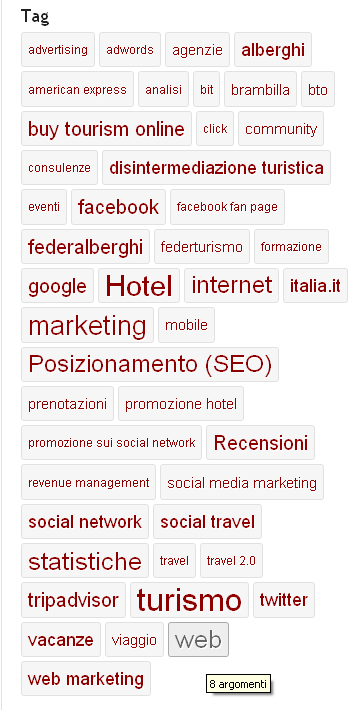
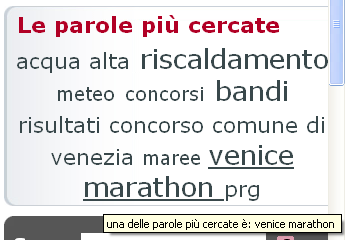
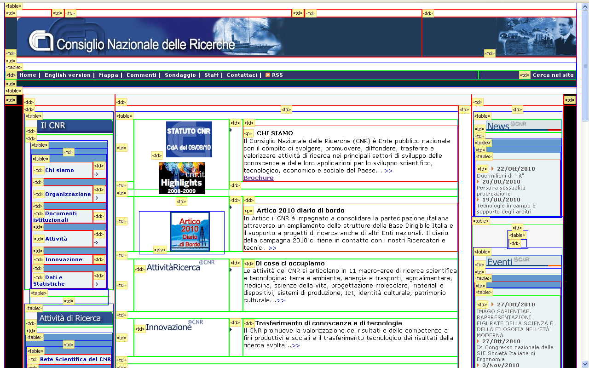
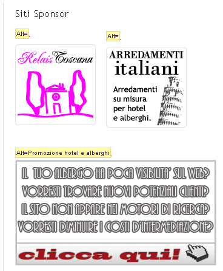
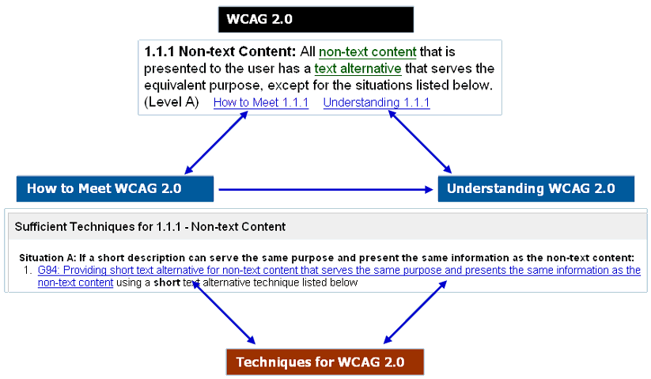

Ringraziamenti
- Questa presentazione utilizza anche materiale
proveniente da:
- Il materiale di questa presentazione può
essere riutilizzato nel rispetto delle leggi sul
copyright e delle regole del W3C
Perché accessibile?
- Norma di legge?
-
è un obbligo, spesso visto come fine a
se stesso
- Professionalità?
- comprensibilità, usabilità,
qualità, …
-
è un buon motivo
- Cultura?
- principi di base della convivenza civile
e del Web
- è la vera ragione
- Un sito non accessibile
- …
-
non è un sito Web!
O.M.S.: cosa era la disabilità (1980)
International Classification of Impairments,
Disabilities and Handicaps (ICIDH), 1980
-
Menomazione (Impairment)
-
Qualsiasi perdita o anormalità a carico di una
struttura o una funzione psicologica, fisiologica,
anatomica
-
Disabilità
-
Limitazione o perdita (conseguente a menomazione) della
capacità di compiere una attività nel
modo e nell’ampiezza considerati normali
-
Handicap
-
Condizione di svantaggio conseguente a una menomazione
o a una disabilità che limita o impedisce
l’adempimento del ruolo normale per tale
soggetto, in relazione all’età, al sesso,
ai fattori socioculturali
O.M.S.: cosa è la disabilità (2001)
International Classification of Functioning,
Disability and Health (ICF), 2001
- Copre tutti gli aspetti della salute umana,
raggruppandoli in:
-
health domain (vedere, udire, camminare,
imparare e ricordare)
-
healt related domains (mobilità,
istruzione, partecipazione alla vita sociale, etc.)
-
integra aspetti medici e sociali: per ciascuna
delle voci classificate, a ciascun individuo vengono
associati uno o più qualificatori che
quantificano il suo "funzionamento"
- "funzionamento umano" in generale: modello
universale, copre l'intero arco della vita
(bambini e anziani)
-
attività invece di
disabilità
-
partecipazione invece di handicap
RIFLESSIONE: a chi non è capitato di trovarsi in
situazioni in cui ha “funzionalità
ridotte”, per motivi contingenti o condizioni
ambientali?
I vari tipi di disabilità e i problemi
-
Visiva
-
- grafici o video senza spiegazioni
- tabelle o frame con cattivo linguaggio di
marcatura e non ben linearizzabili
- assenza del supporto della tastiera
- incompatibilità con gli screen reader
-
Uditiva
-
- assenza di sottotitoli
- testo senza indicazione degli elementi
strutturali (signposts)
-
Fisica
-
- assenza del supporto della tastiera o di
menù azionabili con un solo tasto
(single-switch)
-
Cognitiva o neurologica
-
- navigazione poco coerente
- presentazione o linguaggio difficili
- assenza di materiale illustrativo non testuale
- scritte lampeggianti o in movimento
Pensiamo a qualche caso concreto
Gli esempi seguenti sono dei campioni estratti puramente
caso, e vanno visti unicamente come documentazione di
carenze tipiche e molto frequenti.
Non rispondono quindi a nessun intento censorio
specifico.
-
Contenuti audiovisivi: devono essere
sottotitolati (preferibilmente anche in LIS) e
audiodescritti
-
CAPTCHA non accessibili
- Indici lunghi e assenza della possibilità di
saltare direttamente al contenuto
- Link “invisibili” (tono su tono,
onmouseover, etc.)
-
Layout fissi (scrolling orizzontale in caso di
ingrandimento)
- Sovrapposizione di informazioni e perdita di
leggibilità in caso di ingrandimento
(vedi esempio)
- …e ancora…
Parliamo delle tag cloud…
 
- Il codice di questa tag cloud è scritto
correttamente, ogni link ha un attributo
title
- In questa implementazione il messaggio ricevuto
è sempre: “una delle parole
più cercate è:
<parola>”
- Ma la valenza di una tag cloud è
rendere evidente a prima vista quali sono i
termini più rilevanti: i termini vengono
presentati con caratteri di dimensioni proporzionali alla
loro rilevanza
- I dislessici hanno problemi nel leggere e
comprendere le tag cloud (
vedi articolo)
- È possibile adottare altre forme di
rappresentazione più semplici per screen
reader. Per.es.:
- ordine alfabetico con indicazione in
parentesi del numero di occorrenze
- ordine decrescente in base alla
frequenza (con o senza indicazione della
frequenza)
- opportuno markup (vedi esempio: [
web] [local])
I documenti

- Documento pubblicato come pdf immagine
- Un documento pdf testo non strutturato:
- Un documento pdf testo strutturato:
Un layout a tabelle, senza strutturazione
(sito cnr)

Testi alternativi, title, etc.

-
<a href="http://www.relaistoscana.com/"
class="link_list_item1" target="_blank">
<img style="opacity: 1; visibility: visible; display: block;"
class="rounded"
src=
"http://www.turismoeconsigli.com/wp-content/uploads/2010/08/logo-relais-toscana.gif"
title="" alt=""></a>
-
<div class="textwidget"><br>
<a href="http://www.turismoeconsigli.com/contatti/">
<img style="width: 330px; height: 172px; opacity: 1;
visibility: visible; display: block;"
alt="Promozione hotel e alberghi"
src=
"http://www.turismoeconsigli.com/wp-content/uploads/2010/07/banner-click-to-call.jpg"
border="0" height="160"></a></div>
Componenti della Web Accessibility
-
Contenuto
-
Testi, immagini, moduli, multimedia, applicazioni, etc.
-
Sviluppatori
-
Usano authoring tool, editor, strumenti di valutazione,
CMS (Content Management Systems).
Dovrebbero essere accessibili e produrre
contenuti accessibili
-
Utenti
-
Usano User Agent (browser, media player, etc.)
per accedere al contenuto.
Se giocano bene il loro ruolo, servono meno
accorgimenti per rendere accessibili i contenuti
- W3C sviluppa:
-
linee guida per l' accessibilità
(per Authoring Tools, Web Content, User Agents)
-
specifiche tecniche (HTML, XML, CSS, SVG,
SMIL, etc.)
WAI (Web Accessibility Initiative): guideline…
Le tre
linee guida:
-
Web Content Accessibility Guidelines
come creare contenuti Web accessibili
WCAG 1.0 (1999,
Recommendation)
e WCAG 2.0 (W3C Recommendation - 11
dicembre 2008) [vedi il comunicato
stampa]
-
Authoring Tool Accessibility Guidelines
come progettare strumenti di authoring
utilizzabili da autori disabili, e che producono
contenuti Web accessibili
ATAG 1.0 (2000,
Recommendation)
e ATAG 2.0 (Working
Draft - 8 luglio 2010)
-
User Agent Accessibility Guidelines
cosa devono fare gli sviluppatori di software per
migliorare l' accessibilità dei mainstream
browser a dei multimedia player per
consentire un migliore accesso alle risorse Web per le
persone affette da deficit uditivi, cognitivi, visivi,
fisici
(Browser, UAAG 1.0,
2002, Recommendation) e
UAAG 2.0 (Working
Draft - 17 giugno 2010)
… e anche …
-
Accessibile Rich Internet Applications [comunicato
stampa]
-
-
Valutazione e verifica
-
Continua lo sviluppo di:
WCAG 2.0 pregi e difetti
-
Pregi:
-
-
Standard internazionale sviluppato in
maniera cooperativa con il coinvolgimento
di esperti di tutto il mondo
-
Web Standard: non crea elementi di
discontinuità nel web (doesn't fragment the
Web)
-
Non legate a tecnologie specifiche, si
applicano alle tecnologie più
avanzate e prendono in considerazione
tecnologie nuove (e future)
-
Principi generali (duraturi nel tempo)
-
Flessibilità e
adattabilità (tecniche diverse per
le varie situazioni)
-
Guidelines
- Success Criteria (SC) più chiari
e verificabili
-
Esempi pratici di implementazione e altre
informazioni
-
Difetti:
-
-
non per principianti (la cultura
dell'accessibilità costituisce in
qualche modo un prerequisito per coglierne la
ricchezza ed applicarle al meglio)
-
Tuttavia:
- sono personalizzabili (quick
reference)
- sono in fase di definizione delle “
views”, aggiuntive, comprese
quelle per principianti
…sono collegati e navigabili…

…e li trovate qui

I quattro principi
(Con piccole differenze rispetto alla traduzione
italiana autorizzata pubblicata il 21 dicembre
2009)
Understanding principles
-
Percepibile (Perceivable)
-
Le informazioni e i componenti dell'interfaccia utente
devono essere presentati in modo che possano essere
fruiti attraverso differenti canali sensoriali
(gli utenti devono essere posti in grado di
percepire l' informazione presentata, che non
può essere "invisibile" a tutti i loro
sensi)
-
Utilizzabile
(Operable)
-
I componenti e la navigazione dell'interfaccia utente
devono essere utilizzabili [senza ingiustificati disgi
o vincoli per l'utente]
(gli utenti devono essere posti in grado di
interagire mediante l' interfaccia, che non può
richiedere azioni che l' utente non è in grado
di compiere)
-
Comprensibile (Understandable)
-
Gli utenti devono poter comprendere le modalità
di funzionamento dell'interfaccia e le azioni in essa
contenute necessarie per ottenere servizi e
informazioni
(il contenuto o l' azione non possono essere al di
là della comprensione dell' utente)
-
Robusto
(Robust)
-
Il contenuto deve essere abbastanza robusto per essere
interpretato in maniera affidabile mediante una vasta
gamma di programmi utente (user agent), comprese le
tecnologie assistive
(a mano a mano che le tecnologie e gli user agent
evolvono, il contenuto deve rimanere accessibile)
WCAG 2.0: guidelines, success criteria e techniques
-
Quattro principi di progettazione
- Per ogni principio, le guideline (12 in
tutto)
- Per ogni guideline, sono definiti dei criteri di
successo (success criteria) da conseguire per
essere conformi allo standard
- Per ogni guideline e criterio di successo sono
documentate diverse tecniche (Sufficient and Advisory
Techniques)
-
tecniche sufficienti: adeguate per
conseguire il criterio di successo
-
tecniche “consigliate”: vanno
al di là del minimo richiesto e consentono
di conseguire meglio gli obiettivi della guideline
WCAG 2.0: criteri di successo
- I criteri di successo (success criteria):
- sono verificabili (automaticamente o con
intervento umano)
- permettono di definire meglio le guideline e
determinare la conformità
- sono raggruppati in tre livelli, che
rappresentano livelli crescenti di
accessibilità
- sono tutti essenziali per qualcuno
- I livelli non sono da intendere come
priorità
- Un esempio: Guideline 3.1: Rendere leggibile e
comprensibile il contenuto testuale [online]
[local]
-
Livello A: Specificare la lingua della
pagina web in modo che possa essere rilevata
in maniera automatica
-
Livello AA: Specificare tutti i cambi
di lingua, esclusi nomi propri, termini
tecnici, parole usuali nel contesto specifico, etc.
-
Livello AAA: meccanismi automatici per
identificare definizioni di parole non
usuali, significato delle
abbreviazioni, necessità di un
livello di scolarizzazione superiore a
quella della scuola primaria, pronunzia
esatta di omografi con significati differenti.
Percepire: le guideline
L' informazione e i componenti dell' interfaccia utente
devono essere presentabili agli utenti in modo da essere
percepibili
- 1.1 - Fornire alternative testuali per qualsiasi
contenuto non di testo in modo che possa essere
trasformato in altre modalità fruibili secondo le
necessità degli utenti come stampa a grandi
caratteri, Braille, sintesi vocale, simboli o linguaggio
più semplice.
- 1.2 - Fornire alternative per i media temporizzati
- 1.3 - Creare contenuti che possano essere
rappresentati in modalità differenti (ad esempio,
con layout più semplici), senza perdere
informazioni o la struttura
- 1.4 - Distinguibile: Rendere più semplice agli
utenti la visualizzazione e il sonoro dei contenuti,
separando i contenuti in primo piano dallo sfondo.
Agire: le guideline
I componenti e la navigazione dell'interfaccia utente
devono essere utilizzabili
- 2.1 - Accessibile da tastiera: Rendere disponibili
tutte le funzionalità tramite tastiera
- 2.2 - Adeguata disponibilità di tempo: Fornire
agli utenti tempo sufficiente per leggere ed utilizzare i
contenuti
- 2.3 - Convulsioni: Non sviluppare contenuti che
possano causare attacchi epilettici
- 2.4 - Navigabile: Fornire delle funzionalità
di supporto all'utente per navigare, trovare contenuti e
determinare la propria posizione
Comprendere: le guideline
Le informazioni e le operazioni dell'interfaccia utente
devono essere comprensibili
- 3.1 - Leggibile: Rendere il testo leggibile e
comprensibile
- 3.2 - Prevedibile: Creare pagine Web che appaiano e
che siano prevedibili
- 3.3 - Assistenza nell'inserimento: Aiutare gli utenti
ad evitare gli errori ed agevolarli nella loro correzione
Mantenere: le guideline
Il contenuto deve essere abbastanza robusto per essere
interpretato in maniera affidabile mediante una vasta
gamma di programmi utente, comprese le tecnologie
assistive
- 4.1 - Compatibile: Garantire la massima
compatibilità con i programmi utente attuali e
futuri, comprese le tecnologie assistive
La dichiarazione di conformità
L'enunciato [
it] [en]
- Livello di conformità [it]
[en]
- Pagine complete [it]
[en]
- Processi completi [it]
[en]
- Utilizzo di sole tecnologie con modalità
compatibile con l'accessibilità [it]
[en]
- Non interferenza [it]
[en]
Le nuove tecnologie e le applicazioni web
-
Obiettivi
-
Accettare tutte le nuove tecnologie, purché
non interferiscano con le tecnologie assistive
e le caratteristiche di accessibilità degli user
agent
-
"Accessibility-supported" Techniques [
it] [
en]
-
Tecnologie che funzionano correttamente con le
tecnologie assistive e le caratteristiche di
accessibilità degli user agent
-
Vincoli
-
Tutte le informazioni e le funzionalità
della pagina devono essere presentate utilizzando
tecnologie "accessibility-supported".
Si possono usare tecniche non "accessibility-supported"
se utilizzate per "enhancement"
-
Risultato
-
Maggiore flessibilità per situazioni
diverse (sito pubblico, intranet)
Conclusioni
- L'accessibilità dei siti è un
“requisito ontologico”
- Il concetto di disabilità è ampio
è riguarda tutti
- Le persone con funzionalità ridotte
(non ipocritamente: “diversamente abili” o
peggio) non possono essere escluse dai servizi e
dalle attività sociali che si basano sul Web
- Molti casi di errori grossolani per scarse
competenze o peggio per totale indifferenza
- La Web Accessibility è costituita da
diversi fattori
- La Recommendation WCAG 2.0 del W3C


{kind=link}
{kind=link}
{kind=link}